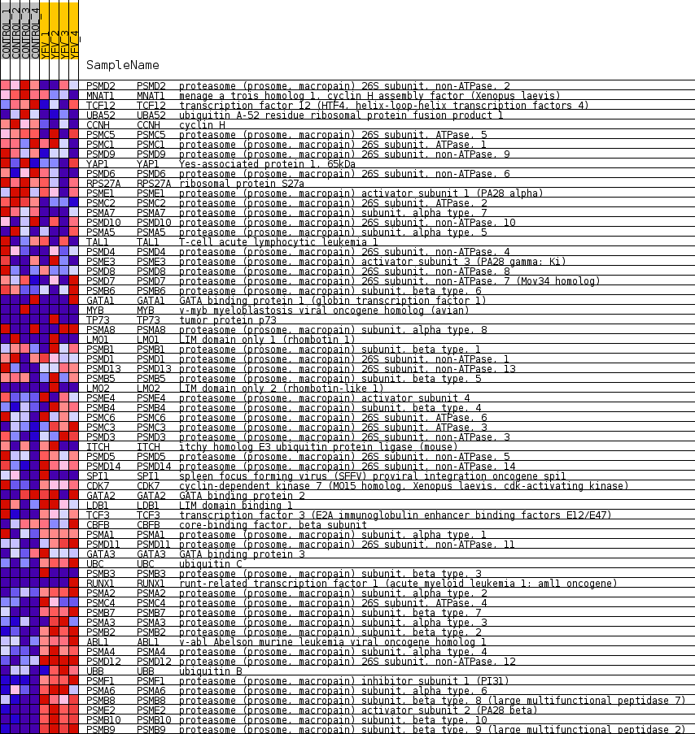
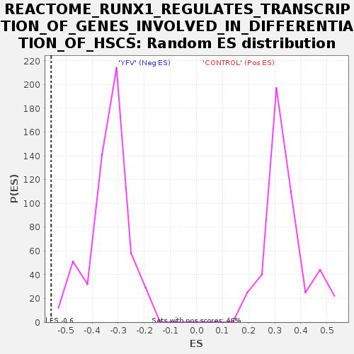

Profile of the Running ES Score & Positions of GeneSet Members on the Rank Ordered List
| Dataset | MATRIZ_GSE99081_collapsed_to_symbols.gsea_CLASE_99081.cls#CONTROL_versus_YFV |
| Phenotype | gsea_CLASE_99081.cls#CONTROL_versus_YFV |
| Upregulated in class | YFV |
| GeneSet | REACTOME_RUNX1_REGULATES_TRANSCRIPTION_OF_GENES_INVOLVED_IN_DIFFERENTIATION_OF_HSCS |
| Enrichment Score (ES) | -0.5569495 |
| Normalized Enrichment Score (NES) | -1.668486 |
| Nominal p-value | 0.0 |
| FDR q-value | 0.043468382 |
| FWER p-Value | 0.671 |
| SYMBOL | TITLE | RANK IN GENE LIST | RANK METRIC SCORE | RUNNING ES | CORE ENRICHMENT | |
|---|---|---|---|---|---|---|
| 1 | PSMD2 | proteasome (prosome, macropain) 26S subunit, non-ATPase, 2 | 711 | 0.738 | -0.0183 | No |
| 2 | MNAT1 | menage a trois homolog 1, cyclin H assembly factor (Xenopus laevis) | 1532 | 0.524 | -0.0508 | No |
| 3 | TCF12 | transcription factor 12 (HTF4, helix-loop-helix transcription factors 4) | 1923 | 0.494 | -0.0578 | No |
| 4 | UBA52 | ubiquitin A-52 residue ribosomal protein fusion product 1 | 1969 | 0.488 | -0.0436 | No |
| 5 | CCNH | cyclin H | 2363 | 0.431 | -0.0529 | No |
| 6 | PSMC5 | proteasome (prosome, macropain) 26S subunit, ATPase, 5 | 3127 | 0.329 | -0.0887 | No |
| 7 | PSMC1 | proteasome (prosome, macropain) 26S subunit, ATPase, 1 | 3697 | 0.267 | -0.1146 | No |
| 8 | PSMD9 | proteasome (prosome, macropain) 26S subunit, non-ATPase, 9 | 3732 | 0.263 | -0.1076 | No |
| 9 | YAP1 | Yes-associated protein 1, 65kDa | 3767 | 0.261 | -0.1006 | No |
| 10 | PSMD6 | proteasome (prosome, macropain) 26S subunit, non-ATPase, 6 | 3986 | 0.243 | -0.1056 | No |
| 11 | RPS27A | ribosomal protein S27a | 4134 | 0.232 | -0.1067 | No |
| 12 | PSME1 | proteasome (prosome, macropain) activator subunit 1 (PA28 alpha) | 4391 | 0.212 | -0.1151 | No |
| 13 | PSMC2 | proteasome (prosome, macropain) 26S subunit, ATPase, 2 | 4826 | 0.173 | -0.1360 | No |
| 14 | PSMA7 | proteasome (prosome, macropain) subunit, alpha type, 7 | 5238 | 0.134 | -0.1567 | No |
| 15 | PSMD10 | proteasome (prosome, macropain) 26S subunit, non-ATPase, 10 | 5332 | 0.127 | -0.1580 | No |
| 16 | PSMA5 | proteasome (prosome, macropain) subunit, alpha type, 5 | 5659 | 0.102 | -0.1747 | No |
| 17 | TAL1 | T-cell acute lymphocytic leukemia 1 | 5922 | 0.082 | -0.1880 | No |
| 18 | PSMD4 | proteasome (prosome, macropain) 26S subunit, non-ATPase, 4 | 6348 | 0.049 | -0.2126 | No |
| 19 | PSME3 | proteasome (prosome, macropain) activator subunit 3 (PA28 gamma; Ki) | 6661 | 0.029 | -0.2309 | No |
| 20 | PSMD8 | proteasome (prosome, macropain) 26S subunit, non-ATPase, 8 | 6710 | 0.026 | -0.2330 | No |
| 21 | PSMD7 | proteasome (prosome, macropain) 26S subunit, non-ATPase, 7 (Mov34 homolog) | 6854 | 0.018 | -0.2412 | No |
| 22 | PSMB6 | proteasome (prosome, macropain) subunit, beta type, 6 | 7048 | 0.008 | -0.2528 | No |
| 23 | GATA1 | GATA binding protein 1 (globin transcription factor 1) | 7188 | 0.001 | -0.2614 | No |
| 24 | MYB | v-myb myeloblastosis viral oncogene homolog (avian) | 7418 | 0.000 | -0.2756 | No |
| 25 | TP73 | tumor protein p73 | 9333 | -0.000 | -0.3939 | No |
| 26 | PSMA8 | proteasome (prosome, macropain) subunit, alpha type, 8 | 9584 | -0.007 | -0.4091 | No |
| 27 | LMO1 | LIM domain only 1 (rhombotin 1) | 9676 | -0.011 | -0.4144 | No |
| 28 | PSMB1 | proteasome (prosome, macropain) subunit, beta type, 1 | 9745 | -0.014 | -0.4181 | No |
| 29 | PSMD1 | proteasome (prosome, macropain) 26S subunit, non-ATPase, 1 | 10102 | -0.030 | -0.4391 | No |
| 30 | PSMD13 | proteasome (prosome, macropain) 26S subunit, non-ATPase, 13 | 10422 | -0.053 | -0.4570 | No |
| 31 | PSMB5 | proteasome (prosome, macropain) subunit, beta type, 5 | 10473 | -0.058 | -0.4580 | No |
| 32 | LMO2 | LIM domain only 2 (rhombotin-like 1) | 10535 | -0.062 | -0.4596 | No |
| 33 | PSME4 | proteasome (prosome, macropain) activator subunit 4 | 10799 | -0.085 | -0.4729 | No |
| 34 | PSMB4 | proteasome (prosome, macropain) subunit, beta type, 4 | 10839 | -0.088 | -0.4723 | No |
| 35 | PSMC6 | proteasome (prosome, macropain) 26S subunit, ATPase, 6 | 11010 | -0.102 | -0.4793 | No |
| 36 | PSMC3 | proteasome (prosome, macropain) 26S subunit, ATPase, 3 | 11528 | -0.149 | -0.5061 | No |
| 37 | PSMD3 | proteasome (prosome, macropain) 26S subunit, non-ATPase, 3 | 11846 | -0.178 | -0.5195 | No |
| 38 | ITCH | itchy homolog E3 ubiquitin protein ligase (mouse) | 11909 | -0.184 | -0.5169 | No |
| 39 | PSMD5 | proteasome (prosome, macropain) 26S subunit, non-ATPase, 5 | 11911 | -0.185 | -0.5105 | No |
| 40 | PSMD14 | proteasome (prosome, macropain) 26S subunit, non-ATPase, 14 | 11924 | -0.186 | -0.5048 | No |
| 41 | SPI1 | spleen focus forming virus (SFFV) proviral integration oncogene spi1 | 12242 | -0.218 | -0.5169 | No |
| 42 | CDK7 | cyclin-dependent kinase 7 (MO15 homolog, Xenopus laevis, cdk-activating kinase) | 12316 | -0.226 | -0.5135 | No |
| 43 | GATA2 | GATA binding protein 2 | 12412 | -0.234 | -0.5113 | No |
| 44 | LDB1 | LIM domain binding 1 | 12494 | -0.244 | -0.5078 | No |
| 45 | TCF3 | transcription factor 3 (E2A immunoglobulin enhancer binding factors E12/E47) | 12636 | -0.258 | -0.5076 | No |
| 46 | CBFB | core-binding factor, beta subunit | 12776 | -0.274 | -0.5066 | No |
| 47 | PSMA1 | proteasome (prosome, macropain) subunit, alpha type, 1 | 12891 | -0.287 | -0.5037 | No |
| 48 | PSMD11 | proteasome (prosome, macropain) 26S subunit, non-ATPase, 11 | 13564 | -0.374 | -0.5323 | No |
| 49 | GATA3 | GATA binding protein 3 | 13646 | -0.386 | -0.5239 | No |
| 50 | UBC | ubiquitin C | 14182 | -0.479 | -0.5403 | Yes |
| 51 | PSMB3 | proteasome (prosome, macropain) subunit, beta type, 3 | 14438 | -0.500 | -0.5387 | Yes |
| 52 | RUNX1 | runt-related transcription factor 1 (acute myeloid leukemia 1; aml1 oncogene) | 14501 | -0.500 | -0.5252 | Yes |
| 53 | PSMA2 | proteasome (prosome, macropain) subunit, alpha type, 2 | 14672 | -0.535 | -0.5171 | Yes |
| 54 | PSMC4 | proteasome (prosome, macropain) 26S subunit, ATPase, 4 | 14766 | -0.557 | -0.5035 | Yes |
| 55 | PSMB7 | proteasome (prosome, macropain) subunit, beta type, 7 | 14794 | -0.565 | -0.4855 | Yes |
| 56 | PSMA3 | proteasome (prosome, macropain) subunit, alpha type, 3 | 14958 | -0.609 | -0.4745 | Yes |
| 57 | PSMB2 | proteasome (prosome, macropain) subunit, beta type, 2 | 15120 | -0.662 | -0.4614 | Yes |
| 58 | ABL1 | v-abl Abelson murine leukemia viral oncogene homolog 1 | 15336 | -0.758 | -0.4484 | Yes |
| 59 | PSMA4 | proteasome (prosome, macropain) subunit, alpha type, 4 | 15508 | -0.833 | -0.4300 | Yes |
| 60 | PSMD12 | proteasome (prosome, macropain) 26S subunit, non-ATPase, 12 | 15525 | -0.844 | -0.4017 | Yes |
| 61 | UBB | ubiquitin B | 15642 | -0.918 | -0.3770 | Yes |
| 62 | PSMF1 | proteasome (prosome, macropain) inhibitor subunit 1 (PI31) | 15701 | -0.986 | -0.3463 | Yes |
| 63 | PSMA6 | proteasome (prosome, macropain) subunit, alpha type, 6 | 15762 | -1.053 | -0.3135 | Yes |
| 64 | PSMB8 | proteasome (prosome, macropain) subunit, beta type, 8 (large multifunctional peptidase 7) | 16014 | -1.655 | -0.2715 | Yes |
| 65 | PSME2 | proteasome (prosome, macropain) activator subunit 2 (PA28 beta) | 16061 | -1.905 | -0.2082 | Yes |
| 66 | PSMB10 | proteasome (prosome, macropain) subunit, beta type, 10 | 16150 | -2.694 | -0.1201 | Yes |
| 67 | PSMB9 | proteasome (prosome, macropain) subunit, beta type, 9 (large multifunctional peptidase 2) | 16195 | -3.614 | 0.0027 | Yes |

